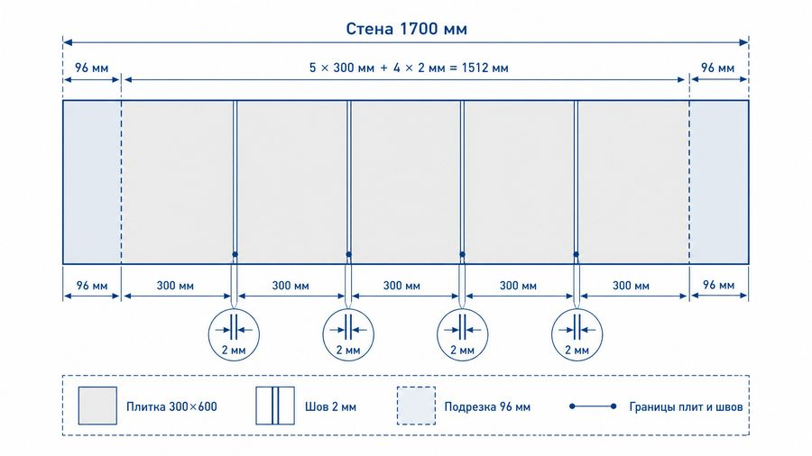
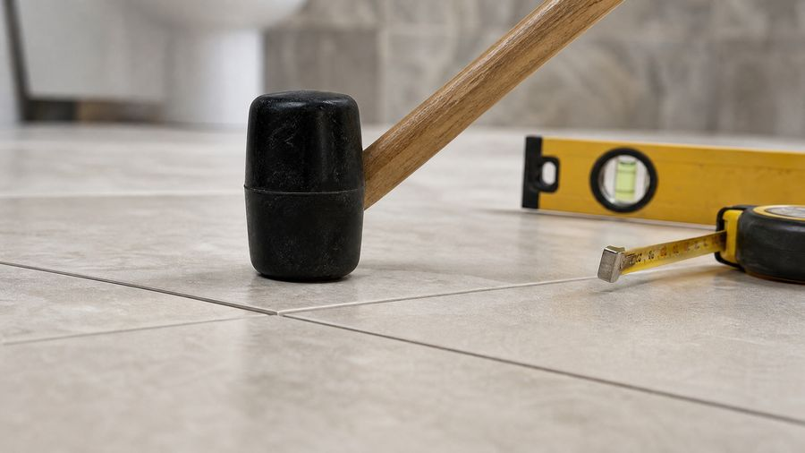

Коротко: для ванной 4 м² берите керамогранит 600×600 мм на пол и плитку 300×600 или 300×900 мм на стены. Шов — 1,5–2 мм для ректифицированной, 2–3 мм для обычной. Расход клея — 3,5–6 кг/м² в зависимости от формата. Перепад основания — не больше 2–3 мм на 2 м. Ошибка с пустотами или узкой подрезкой стоит 8 000–35 000 руб. переделки. Ниже — раскладка, расход клея, смета и 10 проверок при приёмке.
С чего начинается укладка: размеры, раскладка, допуски
Самая дорогая ошибка — купить красивую плитку, а раскладку придумать на объекте. На 4 м² пола и 18–22 м² стен это превращается в 12 000–35 000 руб. лишних трат.
Какие размеры удобнее для типовой ванной
Для ванной 1,7×2,2 м, 1,8×2,4 м или санузла 0,9×1,5 м чаще берут:
- Пол: 300×300, 450×450, 600×600 мм
- Стены: 250×400, 300×600, 300×900, 600×1200 мм
- Мозаика: чип 25×25 или 50×50 мм на сетке 300×300 мм
Для пола ванной 4 м² самый беспроблемный вариант — керамогранит 600×600 мм толщиной 8–10 мм. На стенах удобны 300×600 или 300×900 мм: меньше швов, но ещё без экстремальных требований к ровности основания.
Если стена имеет отклонение 6–10 мм на 2 м, крупный формат 600×1200 мм требует более тщательной подготовки. Иначе слой клея местами вырастет до 12–15 мм — это и перерасход, и риск пустот.
Какие допуски по основанию считать нормой
Перед тем как класть плитку, проверьте стены и пол правилом 2 м. Ориентиры по подготовке:
- Перепад стены под плитку — не более 2–3 мм на 2 м
- Перепад пола под крупный керамогранит — 2–4 мм на 2 м
- Отклонение угла от 90° — не более 3–5 мм на высоту 2,5 м
- Влажность цементной стяжки — обычно не выше 4%
- Срок созревания стяжки 40–50 мм — около 28 суток
- Срок высыхания штукатурки слоем 10 мм — в среднем 7 суток, слоем 20 мм — 10–14 суток
Совет: раскладку делайте не по центру комнаты, а от самой заметной стены. Узкая подрезка 30–50 мм у двери раздражает сильнее, чем шов, смещённый от центра на 70–120 мм.
Быстрый расчёт раскладки на стену
Стена 1700 мм, плитка 300×600 мм, шов 2 мм. По ширине при горизонтальной укладке:
- 5 плиток = 5 × 300 = 1500 мм
- 4 шва = 4 × 2 = 8 мм
- Всего = 1508 мм
- Остаток = 1700 − 1508 = 192 мм
- При симметрии по краям — по 96 мм
Подрезка 96 мм — нормальная. Если остаток 70 мм, лучше сместить раскладку на полплитки или поменять стартовую ось.
Плитка для ванной: что выбрать по материалу и цене
Для ремонта важны не маркетинговые слова, а водопоглощение, геометрия, толщина и калибр.
Керамическая плитка или керамогранит
Для стен часто берут керамику 7–9 мм: легче, проще резать, дешевле на 15–40%. Для пола — керамогранит 8–10,5 мм: плотнее, устойчивее к износу.
| Параметр | Керамика | Керамогранит |
|---|---|---|
| Цена за 1 м² | 1 300–3 500 руб. | 1 900–5 500 руб. |
| Толщина | 7–9 мм | 8–10,5 мм |
| Водопоглощение | 3–10% | до 0,5% |
| Резка | 300–700 руб./пог. м | 500–1 200 руб./пог. м |
| Масса на стену | ниже | выше на 10–25% |
| Для пола душевой | ограниченно | лучше подходит |
Для мокрой зоны у ванны, умывальника и в санузле без вентиляции керамогранит практичнее. Но для стены 20 м² переплата — 12 000–28 000 руб., поэтому иногда разумно комбинировать: керамика на стены, керамогранит на пол.
Какой коэффициент запаса брать
- Прямая укладка — 7–10%
- Диагональная — 12–15%
- Сложная раскладка с декором и нишами — 15–18%
- Крупный формат с отбором рисунка — 12–20%
Пример: стены 19,6 м², прямая укладка, запас 10% — нужно 21,56 м², округляем до 22 м². При цене 2 400 руб./м² разница между объёмом без запаса и с запасом — 5 760 руб.. Это дешевле, чем искать 1–2 коробки из другого калибра и платить за доставку 2 000–4 000 руб.

Подготовка стен и пола под плитку
Кривая база делает дорогой не плитку, а работу. На стене с завалом 12 мм мастер тратит больше клея, больше времени на выведение плоскости и чаще отказывается от гарантии.
Что входит в подготовку
- Демонтаж старой плитки и клея
- Обеспыливание
- Грунтовка 1–2 слоя
- Выравнивание штукатуркой или шпаклёвкой под плитку
- Локальный ремонт трещин
- Стяжка пола или самонивелир
- Гидроизоляция примыканий и мокрых зон
- Монтаж уголков, маяков, профилей
Бюджет подготовки для ванной 4 м² с высотой потолка 2,6 м и площадью стен 18,7 м²:
| Этап | Объём | Цена |
|---|---|---|
| Демонтаж старой плитки | 22–24 м² | 14 000–24 000 руб. |
| Вывоз 20–25 мешков мусора | 1 услуга | 4 000–8 000 руб. |
| Грунтовка в 2 слоя | 23 м² | 1 500–3 000 руб. |
| Штукатурка стен 10–20 мм | 18,7 м² | 18 000–34 000 руб. |
| Выравнивание пола 4 м² | 4 м² | 4 500–9 000 руб. |
| Подготовка углов и примыканий | 8–12 пог. м | 2 000–5 000 руб. |
Если основание ровное — 26 000–40 000 руб. Если стены гуляют на 15–25 мм — 55 000–75 000 руб. ещё до первой плитки.
Расход материалов на подготовку
- Грунтовка: 0,1–0,2 л/м² на слой, итого 5–9 л на 2 слоя
- Штукатурка цементная: 13–17 кг/м² на 10 мм, при 18,7 м² и слое 12 мм — 290–380 кг
- Наливной пол: 1,5–1,7 кг/м² на 1 мм, при 4 м² и слое 5 мм — 30–34 кг
- Гидроизоляционная лента: 8–12 пог. м
- Санитарный герметик: 2–4 тубы по 280–300 мл
Как класть плитку: пошаговая инструкция
Порядок работ
- Обмер помещения: ширина, длина, высота, короба, ниши, проём. Минимум 6–8 точек.
- Нарисуйте раскладку. Шов 1,5–2 мм для ректифицированной плитки, 2–3 мм для обычной.
- Проверьте геометрию плитки из 2–3 коробок: длина, ширина, плоскость, тон, калибр.
- Подготовьте основание. Перепад на стенах под 300×600 — 2–3 мм на 2 м.
- Разметьте горизонт старта: второй ряд от опорного профиля на высоте 1 плитки плюс шов (302–603 мм от пола).
- Клей зубчатым шпателем: 8–10 мм для 300×600, 10–12 мм для 600×600.
- Для крупного керамогранита — комбинированное нанесение: на основание и тонкий слой на плиту.
- Контроль заполнения: для пола в мокрых зонах — 80–100% контакта, у трапов и ванны — ближе к 100%.
- СВП или крестики. Для шва 2 мм на 4 м² — 250–500 штук.
- Через 24–48 часов затирка. Срок зависит от клея, температуры 18–25 °C и влажности.
- Примыкания к ванне, мебели, сантехнике — санитарный герметик, а не жёсткая затирка.
Сколько клея реально нужно
| Формат и зуб шпателя | Расход клея |
|---|---|
| 250×400 мм, зуб 6–8 мм | 2,5–3,5 кг/м² |
| 300×600 мм, зуб 8–10 мм | 3,5–4,5 кг/м² |
| 600×600 мм, зуб 10–12 мм | 4,5–6 кг/м² |
| 600×1200 мм | 5,5–7,5 кг/м² |
Пример для ванной 4 м²: стены 18,7 м² × 4 кг = 74,8 кг; пол 4 м² × 5 кг = 20 кг; итого 94,8 кг, плюс запас 10% — 104,3 кг. Покупать 5 мешков по 25 кг. По цене 650–1 200 руб. за мешок — 3 250–6 000 руб.
Совет: не пытайтесь выровнять стену плиточным клеем на 15–20 мм. Типичный рабочий диапазон — 2–10 мм, иногда до 15 мм локально.
Смета на укладку плитки в ванной 4 м²
Ванная 1,7×2,35 м, высота 2,6 м. Площадь пола — 4 м². Стены до вычета двери — 21,06 м². Вычитаем дверь 0,7×2,0 = 1,4 м². Получаем 19,6 м².
Базовая смета
| Позиция | Объём | Цена |
|---|---|---|
| Керамогранит на пол | 4,4 м² с запасом | 8 360–19 800 руб. |
| Плитка на стены | 22 м² с запасом | 28 600–77 000 руб. |
| Плиточный клей | 5 мешков по 25 кг | 3 250–6 000 руб. |
| Затирка | 4–6 кг | 1 200–4 500 руб. |
| СВП, крестики, вёдра, губки | комплект | 1 500–4 000 руб. |
| Профили, уголки, герметик | комплект | 2 000–6 500 руб. |
| Укладка на стены | 19,6 м² | 39 000–78 000 руб. |
| Укладка на пол | 4 м² | 8 000–18 000 руб. |
| Резка отверстий и подрезка | 10–18 точек | 5 000–18 000 руб. |
Итого по облицовке без демонтажа и выравнивания:
- Экономный сценарий: 96 910–110 000 руб.
- Средний сценарий: 125 000–165 000 руб.
- Сложный с дорогой плиткой: 190 000–251 800 руб.
Где смета резко растёт
- Плитка 600×1200 мм и больше: работа дороже на 20–50%
- Запил под 45°: 1 200–2 500 руб. за пог. м
- Скрытые ревизии, ниши, короба, полки: плюс 8 000–30 000 руб.

Частые ошибки и цена каждой
Ошибки в плитке редко выглядят страшно в первый день. Проблемы вылезают через 3 месяца, 1 год или после первой нагрузки.
Ошибка 1: пустоты под плиткой
Причины: мало клея, неверный зуб шпателя, нет комбинированного нанесения, пыльное основание. Плитка звенит, край лопается под нагрузкой, вода уходит в пустоты.
Цена: замена 3–5 плиток — 8 000–18 000 руб.. Если нет запаса и нужен подбор аналога — плюс 5 000–15 000 руб.
Ошибка 2: слишком узкая подрезка
Подрезка 20–40 мм по краю стены или у коробов выглядит дёшево даже на плитке по 5 000 руб./м².
Цена: частичная перекладка одной стены 4–6 м² — 15 000–35 000 руб. за работу, потеря материала — 4 000–12 000 руб.
Ошибка 3: шов 1 мм на неректифицированной плитке
При разбежке размеров 0,5–1 мм такой шов почти гарантирует пляску рядов. Швы гуляют на 1–2 мм, плитка в углах не сходится, затирка ложится неравномерно.
Цена: переделка участка 6–10 м² — 20 000–45 000 руб..
Ошибка 4: затирка вместо герметика в примыканиях
Жёсткая цементная затирка в стыке ванны и стены трескается через 3–12 месяцев. Потом туда идёт вода.
Цена: снять затирку и пройти шов герметиком 3–5 пог. м — 3 000–7 000 руб.. Если вода попала под ванну — локальный ремонт 8 000–20 000 руб.
Ошибка 5: экономия на резке отверстий
Отверстие под смеситель или розетку без кондуктора и охлаждения — скол 5–15 мм почти неизбежен.
Цена: одна испорченная плитка 300×900 — 900–2 800 руб.; 600×1200 — 2 500–7 000 руб.; повторный выезд мастера — 2 000–5 000 руб.
Как принять работу: 10 проверок до расчёта
Даже если вы не плиточник, базовую приёмку можно сделать за 20–30 минут.
- Плоскость стены правилом 2 м: просвет не более 2–3 мм
- Совпадение швов по вертикали и горизонтали: разбег не больше 1 мм
- Ширина шва: 2 мм должны быть 2 мм, а не 1,5 с одной стороны и 3 с другой
- Отсутствие пустот: простукивание резиновым молотком
- Уклон пола к трапу: 1–2%, то есть 1–2 см на 1 м
- Чистота углов и запилов
- Равномерность затирки без провалов глубже 1–2 мм
- Примыкания ванны, столешницы, раковины — на герметике
- Отверстия под сантехнику: без сколов, зазор 2–5 мм под чашку
- Запас плитки: 1–2 коробки, минимум 5–10% от закупки
Чек-лист
- Плитка выбрана по формату: стены 300×600 или 300×900, пол 600×600.
- Раскладка сделана до закупки, а не после.
- Подрезка по краям не уже 80–100 мм.
- Стены проверены правилом 2 м, перепады сведены к 2–3 мм.
- Куплен запас 7–10%, при сложной раскладке 12–15%.
- Рассчитан клей: 3,5–6 кг/м² в зависимости от формата.
- Для крупного керамогранита — комбинированное нанесение клея.
- Шов: 1,5–2 мм для ректифицированной, 2–3 мм для обычной.
- Примыкания к ванне и сантехнике выполнены герметиком.
- При приёмке проверены плоскость, швы, пустоты, сколы, уклон, запас.
- В смете отдельно учтены резка, отверстия, запилы под 45° и сложные узлы.
Вопросы и ответы
Какой формат плитки выбрать для ванной 4 м²?
Пол — керамогранит 600×600 мм толщиной 8–10 мм. Стены — керамика 300×600 или 300×900 мм. Такой набор даёт меньше швов и не требует идеального основания.
Сколько клея нужно на ванную 4 м²?
Стены 18,7 м² × 4 кг = 74,8 кг, пол 4 м² × 5 кг = 20 кг. Итого 94,8 кг, с запасом 10% — 104,3 кг. Это 5 мешков по 25 кг.
Какой шов делать для плитки 300×600 мм?
Для ректифицированной — 1,5–2 мм, для обычной — 2–3 мм. Шов 1 мм на неректифицированной плитке почти гарантирует пляску рядов.
Можно ли выравнивать стены плиточным клеем?
Локально — до 10–15 мм. Системно выравнивать клеем нельзя: перерасход, риск пустот, потеря гарантии. Для завала 12 мм и больше — штукатурка или ГКЛ.
Через сколько можно затирать швы?
Через 24–48 часов после укладки. Точный срок зависит от клея, температуры 18–25 °C и влажности. На холодной стене или при повышенной влажности срок увеличивается.
Чем обрабатывать стык ванны и стены?
Санитарным герметиком, а не цементной затиркой. Жёсткая затирка трескается через 3–12 месяцев, вода уходит под ванну. Переделка шва — 3 000–7 000 руб., локальный ремонт при протечке — 8 000–20 000 руб.